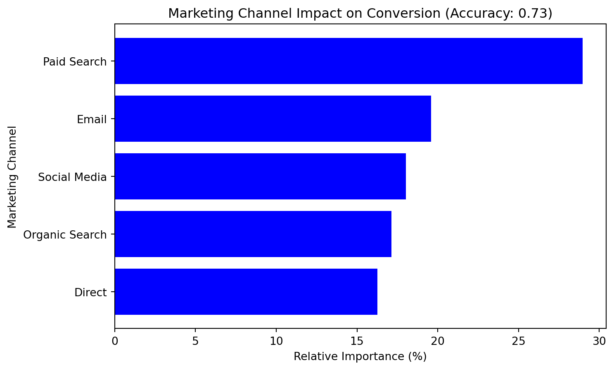

Attribution models are methods used in marketing to assign credit to the various channels or touchpoints that contribute to a customer’s conversion (e.g., making a purchase or signing up for a service). Consider these simple examples:
First-Touch Attribution: Example: A customer sees your online ad for the first time and later converts. In this model, all credit is given to that first interaction—even if the customer later visits your website via social media or search.
Last-Touch Attribution: Example: A customer clicks a social media post and then immediately makes a purchase. Here, all the credit goes to the social media interaction, ignoring any earlier exposures.
Multi-Touch Attribution: Example: A customer interacts with an email, then clicks on a paid search ad, and finally converts after a direct visit. This model distributes the credit across all channels, reflecting the idea that each interaction helped push the customer closer to conversion.
These simple models offer a straightforward way to see how different channels might influence customer behavior. However, real-world customer journeys are often more complex. That’s why data-driven approaches, such as logistic regression, can be especially useful. They allow us to:
Quantify the impact of each marketing channel.
Determine the relative importance of each touchpoint in driving conversions.
Make more informed decisions about budget allocation and campaign optimization.
In the analysis that follows, we’ll use logistic regression to assign weights (or coefficients) to various marketing channels, offering a nuanced view of how each channel contributes to the likelihood of a conversion.
Logistic Regression for Attribution
One data-driven approach is logistic regression, a machine learning method that estimates the probability of conversion based on exposure to different marketing channels. The model assigns weights (coefficients) to each channel, reflecting its relative influence on conversions.
Data Analysis Using Logistic Regression
import numpy as npimport pandas as pdfrom sklearn.model_selection import train_test_splitfrom sklearn.linear_model import LogisticRegressionfrom sklearn.metrics import accuracy_scoreimport matplotlib.pyplot as plt# Generate synthetic datasetnp.random.seed(42)n_samples =1000data = {"Email": np.random.choice([0, 1], size=n_samples, p=[0.6, 0.4]),"Social Media": np.random.choice([0, 1], size=n_samples, p=[0.7, 0.3]),"Paid Search": np.random.choice([0, 1], size=n_samples, p=[0.5, 0.5]),"Organic Search": np.random.choice([0, 1], size=n_samples, p=[0.4, 0.6]),"Direct": np.random.choice([0, 1], size=n_samples, p=[0.8, 0.2]),}# Conversion probability based on a weighted sum of touchpoints + noisetrue_coeffs = np.array([0.8, 1.2, 1.5, 1.0, 0.5])intercept =-1.5X = np.column_stack([data[key] for key in data])logits = intercept + np.dot(X, true_coeffs)probabilities =1/ (1+ np.exp(-logits))conversions = np.random.binomial(1, probabilities)# Create DataFramedf = pd.DataFrame(data)df["Converted"] = conversions# Split data into features (X) and target (y)X = df.drop(columns=["Converted"])y = df["Converted"]X_train, X_test, y_train, y_test = train_test_split(X, y, test_size=0.2, random_state=42)# Train logistic regression modelmodel = LogisticRegression()model.fit(X_train, y_train)# Predict and evaluate accuracyy_pred = model.predict(X_test)accuracy = accuracy_score(y_test, y_pred)# Get feature coefficientscoefficients = model.coef_[0]feature_importance = pd.DataFrame({"Channel": X.columns, "Coefficient": coefficients})feature_importance["Relative Importance (%)"] = (abs(feature_importance["Coefficient"]) /abs(feature_importance["Coefficient"]).sum()) *100feature_importance = feature_importance.sort_values(by="Relative Importance (%)", ascending=False)# Display resultsprint(feature_importance)# Plot feature importanceplt.figure(figsize=(8,5))plt.barh(feature_importance["Channel"], feature_importance["Relative Importance (%)"], color='blue')plt.xlabel("Relative Importance (%)")plt.ylabel("Marketing Channel")plt.title(f"Marketing Channel Impact on Conversion (Accuracy: {accuracy:.2f})")plt.gca().invert_yaxis()plt.show()
Channel Coefficient Relative Importance (%)
2 Paid Search 1.366065 28.975817
0 Email 0.923894 19.596872
1 Social Media 0.849307 18.014793
3 Organic Search 0.808267 17.144288
4 Direct 0.766966 16.268230

Interpretation of Results
After applying logistic regression to our marketing dataset, we obtained the following insights:
Paid Search is the most influential channel, contributing nearly 29% to conversion likelihood.
Email and Social Media have a moderate impact, contributing around 19-18% each.
Organic Search and Direct interactions also play a role, but with slightly lower contributions.
These insights suggest investing more in Paid Search and Email while still leveraging other channels for a balanced marketing strategy.
By using logistic regression, we can quantify the relative importance of each marketing channel in driving conversions. This method provides a data-driven alternative to traditional attribution models, allowing marketers to make more informed decisions on budget allocation.